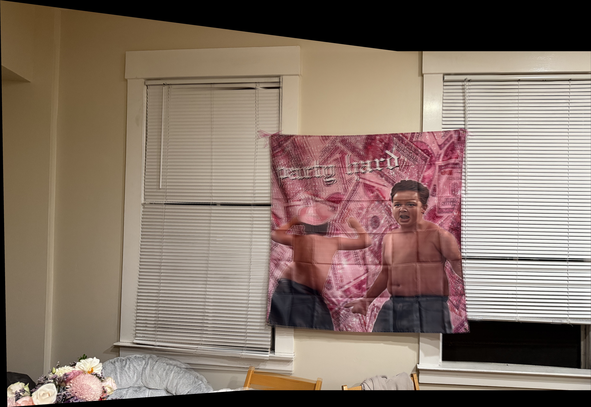
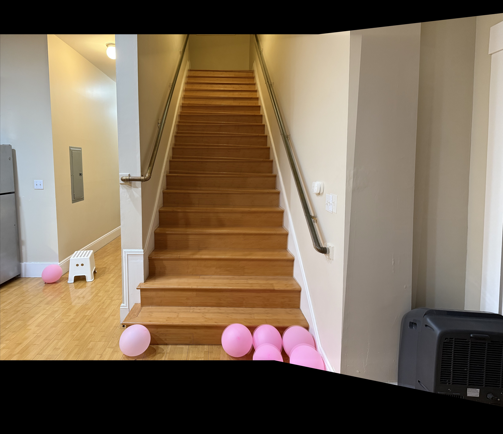
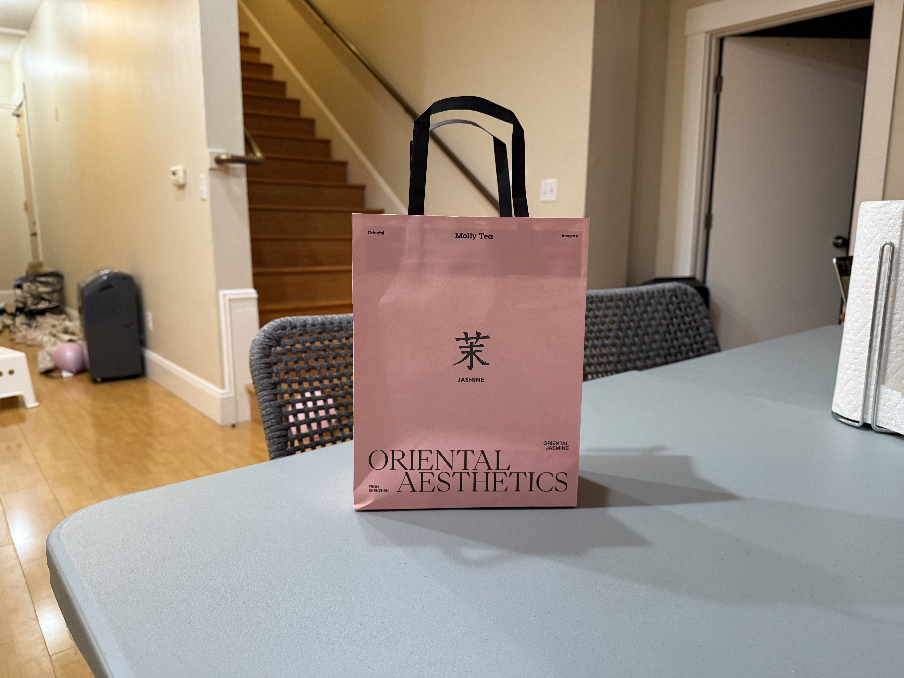
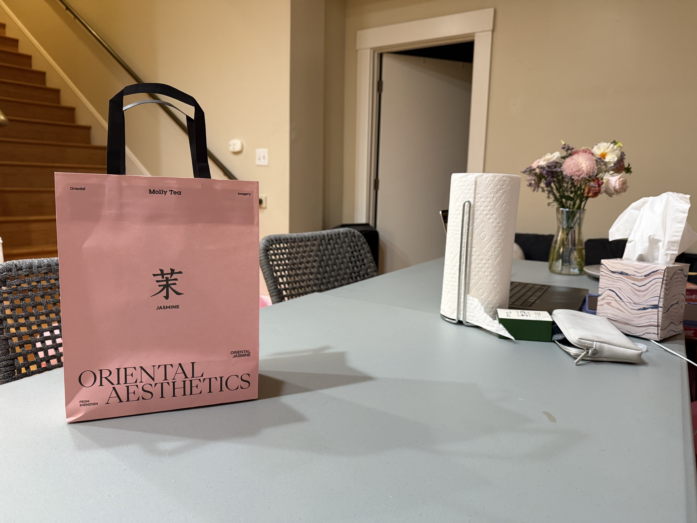
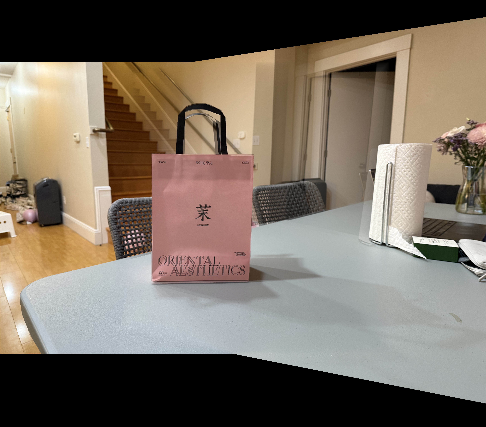

Both interpolations produce very similar results. The bilinear interpolation is slightly smoother, but the difference is negligible. Nearest neighbor interpolation is faster to compute.
Part A.4: Blend the Images into a Mosaic
original gibby
rotated gibby

mosaic gibby
original stairs
rotated stairs

mosaic stairs

original bag

rotated bag

mosaic bag
To create my mosaic, I set the centered image as the base image and warped the rotated image onto it.
I first got the corners of the object I was trying to overlap. Then, I computed H by calling computeH().
Next, I constructed my canvas by taking the width and height of both images and creating a bounding box for the warped image.
I took the x and y coordinate offsets and the new width and height to create a canvas of zeros with 3 channels.
After, I created an alpha mask for the same size with only one channel.
I got the alpha mask by setting the picels in the middle tobe 1 and 0 on the edges and used distance_transform_edt from scipy.ndimage.
Now, I can start putting in the images to my canvas.
Since I am using the centered image as my base, I put the entire image in the canvas at the offset locations and multiplied the alpha mask with it.
I also added the alpha mask value for the centered image to the overall alpha mask of the canvas.
Now, I warp the rotated image using bilinear interpolation and put it in the canvas at the offset locations.
I also multiply the warped image with the alpha mask and add the alpha mask value for the rotated image to the overall alpha mask of the canvas.
Lastly, I normalized the canvas by dividing it by the maximum value of the alpha mask.